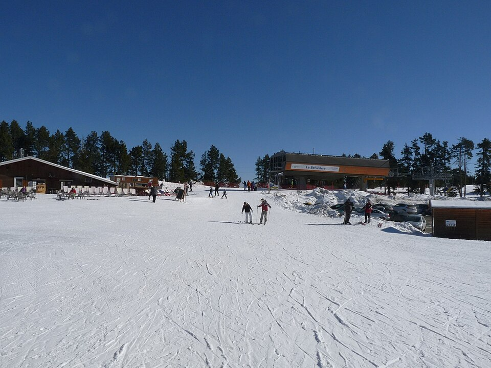

Font-Romeu Pyrénées 2000
Alta Cerdaña · Pirineos Orientales
- Pistas
- 36 km
- 64 trazados
- Cota máxima
- 2212 m
- mínima 1716 m
- Desnivel
- 496 m
- esquiable
- Remontes
- 24
- 9 telesillas · 10 telesquís
Soleada y entre bosque, en la Cerdaña francesa. Uno de los dominios con más cañones de nieve del Pirineo.
Foto: Jack ma · CC BY-SA 3.0 · Wikimedia Commons

Hoy
Font-Romeu Pyrénées 2000 ahora mismo
Estado de pistas y remontes según el último parte publicado, y las webcams de la estación.
Webcams
Estado y webcams de Infonieve.es, a partir de los partes y cámaras de cada estación. Antes de salir, confírmalo en la web oficial o en su parte de nieve.
Próximos 7 días
Nieve y tiempo previstos
Previsión para la cota alta (2212 m) y la base (1716 m).
Previsión de modelos meteorológicos de Open-Meteo (CC BY 4.0). Es previsión, no observación: lo que hay abierto hoy está en el estado de pistas.
Plano
Plano de pistas
Pasa el cursor o toca una pista o un remonte para ver su nombre, longitud y desnivel.
Trazados: © colaboradores de OpenStreetMap (ODbL), datos del 10 de agosto de 2026. No es el plano oficial de la estación ni refleja aperturas.
Pistas
64 pistas, 36 km
La más larga con nombre es Fornells (2,3 km, verde).
VerdeMuy fácil
20 pistas · 13 km
Ver nombres
- Fornells 2,3 km
- Ceinture 1,5 km
- Tremplin 1,3 km
- Poule au pot 1,2 km
- Retour Airelles 1 km
- Retour Airelles 0,8 km
- Mouillères 0,8 km
- Galipette 0,6 km
- Ski plan du levant 0,6 km
- Boarder Cross 0,5 km
- Bois Joli 0,2 km
- Fornells 0,2 km
- Retour Airelles 0,2 km
- Retour Airelles 0,2 km
AzulFácil
20 pistas · 9,1 km
Ver nombres
- Tabaries 1 km
- Liaison 0,9 km
- Primevères 0,8 km
- Belvédère haut 0,8 km
- Belvédère bas 0,8 km
- Colchiques 0,7 km
- Sapinettes 0,7 km
- Grand Tétras haut 0,6 km
- Genêts 0,6 km
RojaIntermedia
13 pistas · 6,7 km
Ver nombres
- Pradeilles 1,4 km
- Perce Neige 0,9 km
- Stade de Slalom 0,8 km
- Ski plan du Roc 0,6 km
- Gentianes 0,6 km
- Perdrix 0,6 km
- Ski Bob 0,5 km
- Perce Neige 0,1 km
- Perce Neige 0,1 km
NegraDifícil
11 pistas · 7 km
Ver nombres
- Record 1,6 km
- Paul Ribell 1,3 km
- Bouton d'Or 0,9 km
- Championnat 0,5 km
- Rhodos 0,5 km
- Competition 0,5 km
- Grand Tétras 0,4 km
- Compétition 0,4 km
- Myrtilles 0,4 km
Remontes
24 remontes
El de mayor desnivel: Aveillans, 409 m.
| Remonte | Tipo | Longitud | Desnivel | Llegada |
|---|---|---|---|---|
| Aveillans | Telesilla | 1471 m | 409 m | 2125 m |
| Calme Nord | Telesilla | 1160 m | 284 m | 2212 m |
| Col Rouge | Telesilla | 813 m | 236 m | 2122 m |
| Belvédère | Telesilla | 2000 m | 222 m | 2001 m |
| Nord | Telesilla | 626 m | 221 m | 1983 m |
| Airelles | Telesilla | 1169 m | 192 m | 2125 m |
| Sud 2 | Telesquí | 1179 m | 192 m | 2127 m |
| Sud 1 | Telesquí | 1178 m | 190 m | 2125 m |
| Gentianes | Telesilla | 615 m | 163 m | 1942 m |
| Roc de la Calme | Telesilla | 659 m | 159 m | 2210 m |
| Perdrix | Telesquí | 546 m | 145 m | 2196 m |
| Colchiques | Telesquí | 834 m | 127 m | 1908 m |
| Col del Pam | Telesilla | 829 m | 123 m | 2125 m |
| Levant | Telesquí | 498 m | 98 m | 2099 m |
| Tremplin | Telesquí | 494 m | 84 m | 2028 m |
| Isard | Telesquí | 223 m | 35 m | 1979 m |
| Baby Pyrénées | Telesquí | 201 m | 24 m | 1804 m |
| Baby Airelles | Telesquí | 77 m | 9 m | 1951 m |
| Débutants | Cinta | 83 m | 9 m | 1789 m |
| Airelles | Cinta | 44 m | 4 m | 1947 m |
| Marmottes | Cinta | 50 m | 4 m | 1947 m |
| Liaison | Telesquí | 245 m | 3 m | 2002 m |
| Ourson | Cinta | 22 m | 3 m | 1787 m |
| Marmotton | Cinta | 21 m | 1 m | 1943 m |
Longitud en planta y desnivel sobre el modelo de relieve. No incluye horarios ni estado de apertura.
Guía práctica
Antes de ir a Font-Romeu Pyrénées 2000
Cómo llegar
Alta Cerdaña, Pirineos Orientales (Francia). Coordenadas del dominio: 42,5317, 2,0352.
Ver en OpenStreetMap · Cómo llegar en coche
En invierno comprueba el estado de la carretera y si hacen falta cadenas.
El terreno
- Pic de la Calma, 2206 m
- Roc de la Calma, 2204 m
- Pic dels Moros, 2138 m
- Serrat de l'Os, 1956 m
- Núcleos: Pyrénées 2000
Enlaces oficiales
Forfaits, horarios y aperturas cambian durante la temporada: los publica la estación.
Para parar en pistas
- Restaurant de la calme
- Chalet du Col de Pam Font Romeu
- L'Ermitage Café
- Le Schuss
- Crêperie Bretonne
- La Grange des Pins
- Le Viking
- Chalet des Airelles
Restaurantes y cafeterías con nombre en OpenStreetMap. Sin horarios.
Font-Romeu Pyrénées 2000 sin cobertura
La app para Android guarda los mapas en el móvil y te ayuda a encontrarte con tu grupo.